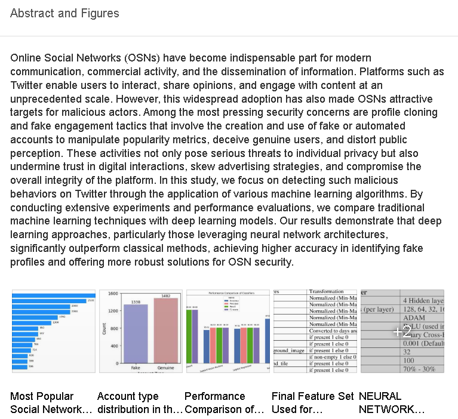
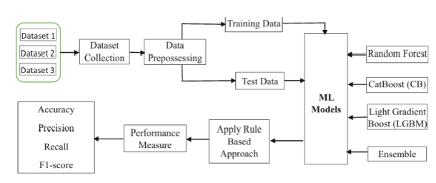

Saptak Sil
Ph.D. student at IIT Kharagpur · Advised by Prof. Ayan Chowdhury
I work on 3D computer vision. My research asks how a machine can break a 3D object into meaningful parts directly from a point cloud.
Next, I want to get the same part-level understanding from a single photo, by lifting it into 3D.
Research
Current Work
Plant Part Segmentation from Point Clouds
Leaves overlap, look alike and change shape as a plant grows. The goal is to label every point of a 3D plant scan as leaf or stem and to separate individual leaves, so growth can be measured automatically.
Unsupervised 3D Shape Co-segmentation
Given many shapes of one category, such as chairs, find the parts that correspond across all of them without labells.
Next Direction
From a Single Image to Part-Aware 3D Scenes
Part segmentation today needs a full 3D scan. Can we get the same understanding from one everyday photo; recovering the scene in 3D and splitting its people and objects into parts?
Education
Ph.D. in Computer Science
Indian Institute of Technology Kharagpur
M.E. in Information Technology
Jadavpur University · CGPA 8.28
B.Tech. in Electronics and Communication Engineering
Institute of Engineering and Management, Kolkata · CGPA 9.43
Experience
Teaching Assistant — Programming and Data Structures Lab
Indian Institute of Technology Kharagpur
- Assist undergraduate students in lab sessions on C programming and data structures.
- Help students debug their programs and evaluate lab tests and assignments.
Junior Software Developer
Cognizant Technology Solutions, Kolkata
- Worked on the analysis, design, implementation and support of insurance software products (Java, SQL).
- Conducted code reviews and post-release testing; reduced ticket volume by 15%.
Publications

Fake Profile Detection on Online Social Networks Using Machine Learning
JoCAAA, 2025
This work studies fake profile detection on online social networks using machine learning and deep learning techniques. The method compares multiple models for identifying suspicious or malicious user profiles in online social networking platforms.

Detecting Profile Cloning on Online Social Networks with Machine Learning
CICBA (Springer)
Focused on identifying and mitigating profile cloning threats in online social networking platforms using machine learning.